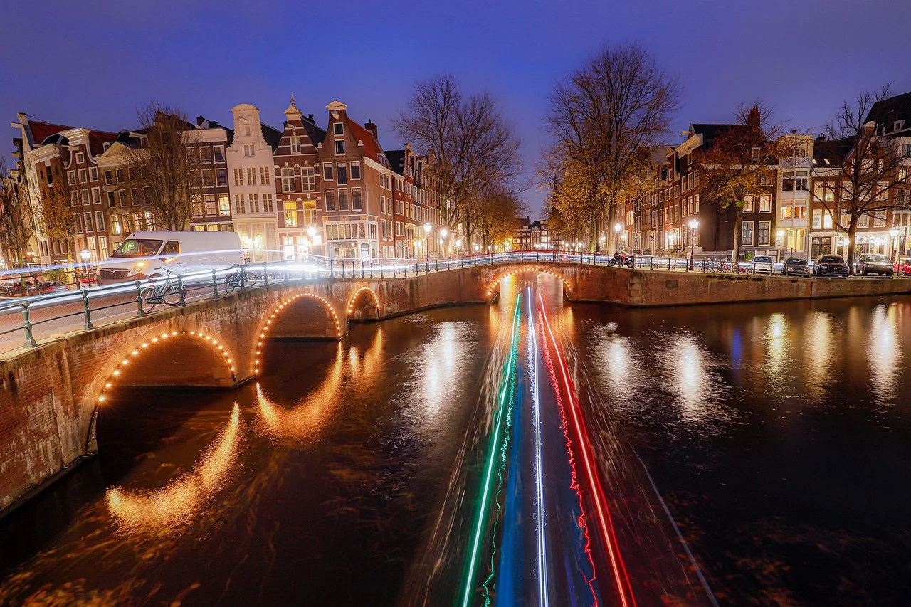
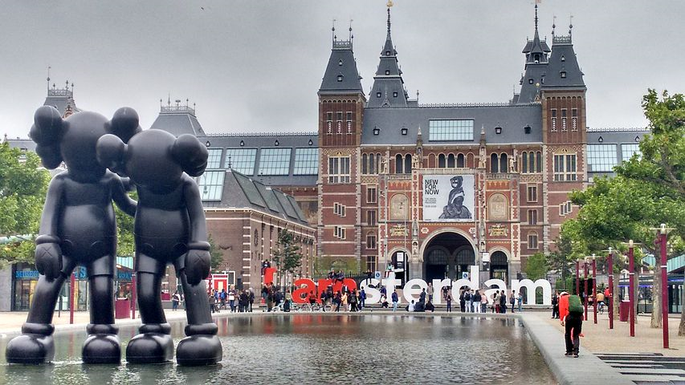

A wonderful place
Amsterdam is the capital and most populous city of the Netherlands. Found within the province of North Holland, Amsterdam is colloquially referred to as the "Venice of the North", attributed by the large number of canals. Amsterdam's name derives from Amstelredamme, indicative of the city's origin around a dam in the river Amstel. Originating as a small fishing village in the late 12th century, Amsterdam became one of the most important ports in the world in the Dutch Golden Age of the 17th century and became the leading centre for finance and trade.
In the 19th and 20th centuries, the city expanded, and many new neighbourhoods and suburbs were planned and built. The 17th-century canals of Amsterdam and the 19–20th century Defence Line of Amsterdam are on the UNESCO World Heritage List. Sloten, annexed in 1921 by the municipality of Amsterdam, is the oldest part of the city, dating to the 9th century.
As the commercial capital of the Netherlands and one of the top financial centres in Europe, Amsterdam is considered an alpha-world city by the Globalization and World Cities study group. T he city is also the cultural capital of the Netherlands. Also, many of the world's largest companies are based in Amsterdam or have established their European headquarters in the city.
In 2012, Amsterdam was ranked the second best city to live in by the Economist Intelligence Unit and 12th globally on quality of living for environment and infrastructure by Mercer. The city was ranked 4th place globally as top tech hub in the Savills Tech Cities 2019 report (2nd in Europe), and 3rd in innovation by Australian innovation agency 2thinknow in their Innovation Cities Index 2009. The Port of Amsterdam is the fifth largest in Europe. Amsterdam Airport Schiphol is the busiest airport in the Netherlands, and the third busiest in Europe. Famous Amsterdam residents include the diarist Anne Frank, artists Rembrandt and Van Gogh, and philosopher Baruch Spinoza.
")